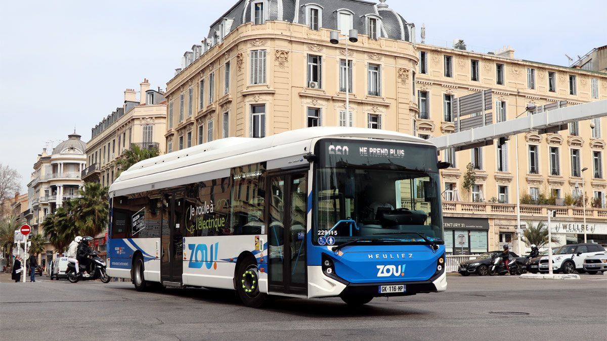
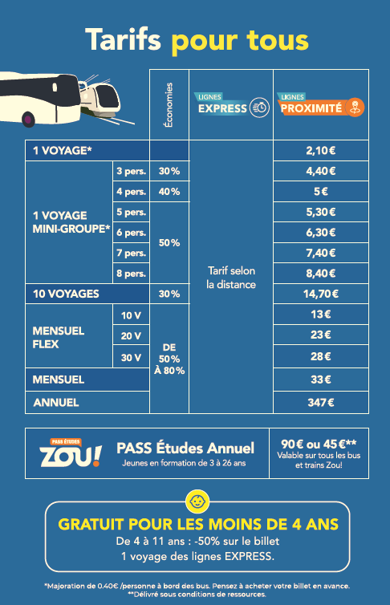

Rôle de ZOU! dans la mobilité non polluante à Nice
Le réseau ZOU! intervient à Nice comme un acteur complémentaire des transports urbains gérés par la Régie Ligne d’Azur (RLA).
Il assure principalement les liaisons interurbaines entre Nice et :
- l’arrière-pays,
- les communes périphériques,
- les zones d’habitat éloignées du centre-ville.
Son rôle économique est essentiel : éviter l’entrée quotidienne de milliers de voitures individuelles dans Nice, qui sont une source majeure de pollution, de congestion et de coûts économiques.
Le réseau ZOU! permet ainsi de substituer la voiture individuelle par un transport collectif non polluant, ce qui correspond pleinement aux objectifs du projet.
À ce titre, le réseau ZOU! s’inscrit pleinement dans une logique de transition écologique des transports, en accompagnant la réduction progressive de la dépendance à la voiture individuelle sur le territoire niçois.
Présentation globale
- Nom : ZOU! (Réseau de transport régional Provence-Alpes-Côte d’Azur)
- Statut : Service public régional
- Création : 2018 (fusion des réseaux LER, Cartreize, Varlib, etc.)
- Propriétaire : Région Provence-Alpes-Côte d’Azur
- Type de transport : Cars interurbains, transport scolaire, lignes express
- Nombre de lignes : + 200 lignes
- Nombre de véhicules : environ 2 000 autocars
- Exploitants : Keolis, Transdev, RLA, autres opérateurs privés
- Zone couverte : Toute la région PACA + liaisons avec Monaco et Italie
Historique rapide
Le réseau ZOU! a été créé en 2018 pour unifier tous les anciens réseaux interurbains de PACA. L’objectif : offrir un service plus lisible, moderne et cohérent. Le réseau dessert les grandes villes (Nice, Cannes, Marseille, Toulon) mais aussi les zones rurales.
Particularités
- Réseau public géré directement par la Région
- Service essentiel pour les zones rurales isolées
- Flotte en transition vers le non polluant (GNV, électrique, hybride)
- Politique tarifaire sociale pour les jeunes et les scolaires
Statut, organisation et logique économique
ZOU! est un service public de transport, financé par la Région Sud, mais utilisé quotidiennement sur le territoire niçois.
Il s’inscrit dans une logique de production non marchande :
- les usagers paient un prix pour le service,
- ce prix est inférieur au coût réel de production,
- le déficit est pris en charge par la collectivité.
L’objectif principal n’est pas la recherche du profit, mais la satisfaction de l’intérêt général : mobilité pour tous, égalité d’accès aux transports et réduction de la pollution.
Au-delà de l’efficacité économique, le réseau ZOU! améliore l’efficacité sociale du territoire. Il permet à des populations disposant de ressources limitées (jeunes, étudiants, ménages modestes, habitants des zones rurales) d’accéder à l’emploi, à la formation et aux services, réduisant ainsi les inégalités de mobilité.
L’exploitation du réseau est confiée à des entreprises privées (Keolis, Transdev, Régie Ligne d’Azur, etc.) dans le cadre de délégations de service public.
Cette organisation permet :
- une meilleure efficacité productive,
- un contrôle public du service,
- une mutualisation des compétences techniques et organisationnelles.
Importance économique locale pour Nice
Le réseau ZOU! joue un rôle clé dans l’économie locale niçoise, car il facilite :
- l’accès des travailleurs aux pôles économiques de Nice,
- les déplacements des élèves et des étudiants,
- la mobilité touristique sans recours à la voiture individuelle.
Sans le réseau ZOU!, une part importante de la population résidant en périphérie utiliserait la voiture pour se rendre à Nice, ce qui entraînerait :
- une augmentation des embouteillages,
- un ralentissement de l’activité économique,
- une hausse des coûts liés à la pollution.
Le réseau ZOU! contribue ainsi directement à la fluidité économique et au bon fonctionnement de la ville de Nice.
Création de valeur ajoutée et contribution au PIB
Même si le réseau ZOU! n’a pas pour objectif de dégager un profit, il reste un acteur économique productif. En produisant un service de transport, en employant des salariés et en réalisant des investissements publics, il crée de la valeur ajoutée, c’est-à-dire de la richesse économique.
Cette valeur ajoutée contribue au PIB local et national. Elle est redistribuée sous plusieurs formes :
- salaires versés aux employés,
- commandes passées aux entreprises partenaires,
- investissements dans les infrastructures de transport.
Ainsi, le réseau ZOU! participe pleinement à l’activité économique, même sans rechercher la rentabilité financière.
Facteurs de production mobilisés
Le fonctionnement du réseau ZOU! repose sur la mobilisation des facteurs de production.
- Le facteur travail correspond aux conducteurs, agents de maintenance, personnels administratifs et techniques nécessaires à l’exploitation du service.
- Le facteur capital regroupe les autocars, les dépôts, les équipements techniques et les infrastructures financés par la puissance publique.
La combinaison de ces facteurs permet la production du service de transport. Les investissements réalisés dans le capital productif, notamment les véhicules non polluants, améliorent l’efficacité du service à long terme et contribuent à une croissance plus durable.
Tarification actuelle
- Ticket interurbain : à partir de 2,10 €
- ZOU! Études : 90 € / an (trajets illimités scolaires et étudiants)
- Abonnement mensuel régional : 125 € (train + bus)
- Réductions : jusqu’à -90% pour les -26 ans
- ZOU! Solidaire : tarifs réduits pour les personnes en difficulté

Création de valeur ajoutée et contribution au PIB
Même si le réseau ZOU! n’a pas pour objectif de dégager un profit, il reste un acteur économique productif. En produisant un service de transport, en employant des salariés et en réalisant des investissements publics, il crée de la valeur ajoutée, c’est-à-dire de la richesse économique.
Cette valeur ajoutée contribue au PIB local et national. Elle est redistribuée sous plusieurs formes :
- salaires versés aux employés,
- commandes passées aux entreprises partenaires,
- investissements dans les infrastructures de transport.
Ainsi, le réseau ZOU! participe pleinement à l’activité économique, même sans rechercher la rentabilité financière.
Structure économique
Revenus
- Vente de titres : 70 à 100 M€ / an
- Subventions Région Sud : 250 à 300 M€ / an
- Subventions État / Europe : 20 à 40 M€ / an
Total : environ 400 M€ de budget annuel
Dépenses
| Poste | Montant estimé | % du total |
|---|---|---|
| Salaires & exploitation | 200 M€ | 50% |
| Maintenance & dépôts | 50 M€ | 12% |
| Transport scolaire | 100 M€ | 25% |
| Achat de véhicules propres | 50 à 80 M€ | 13% |
Les investissements réalisés dans des véhicules non polluants représentent un coût d’opportunité pour la collectivité, car les ressources publiques pourraient être utilisées pour d’autres politiques publiques. Toutefois, ce coût est compensé à long terme par la diminution des dépenses liées à la pollution, à la santé publique et à la congestion urbaine.
Taux d'utilisation de transports non polluants

Flotte propre
- Environ 35% de la flotte roule au GNV, électrique ou hybride
- Objectif : 100% véhicules propres d’ici 2030-2035
- Cars GNV = -30% de CO₂ par rapport au diesel
Taux global de trajets non polluants : ~30% actuellement.

Impact économique du non-polluant
- Moins de carburant consommé (GNV moins cher que diesel)
- Réduction du bruit → amélioration de la vie dans les villages
- Moins de maladies respiratoires → économies pour la région
- Long terme : véhicules propres = économies de maintenance
- Un car remplace 50 voitures → baisse trafic + pollution
Projections économiques
Si ZOU! passe à 100% propre :
- Baisse de 30 à 40% des émissions régionales liées au transport routier
- Économies annuelles estimées : 20 à 30 M€/an
- Réduction de plusieurs dizaines de milliers de tonnes de CO₂ sur une dizaine d’années
- Amélioration majeure de la qualité de vie dans les vallées alpines
Améliorations déjà mises en place à Nice
Le déploiement progressif de cars fonctionnant au GNV sur les lignes entrant à Nice permet une réduction immédiate des émissions de CO₂ et de particules fines, tout en maintenant une capacité de transport élevée.
Ce choix traduit une logique de transition écologique progressive, compatible avec les contraintes économiques d’un service public, et évite un choc financier lié à un remplacement brutal de l’ensemble de la flotte.
L’introduction de cars électriques sur certains trajets ciblés, notamment sur des lignes courtes ou à forte fréquentation, permet d’atteindre une zéro émission locale tout en testant la fiabilité technologique.
Cette phase d’expérimentation est essentielle pour sécuriser les investissements futurs et limiter les risques économiques liés à l’innovation.
La mise en place de lignes express desservant Nice avec un nombre limité d’arrêts améliore la productivité du système de transport. En réduisant le temps de trajet, ces lignes renforcent l’attractivité du transport collectif face à la voiture individuelle et génèrent un gain économique indirect pour les usagers (temps gagné, fatigue réduite).
Enfin, la politique tarifaire très incitative constitue un levier central de la politique publique de mobilité. En proposant des prix bas et des abonnements avantageux, la collectivité utilise le prix comme outil de régulation, afin d’orienter les comportements vers des modes de transport moins polluants, conformément aux mécanismes étudiés en économie publique.
Améliorations non polluantes proposées
La conversion prioritaire des lignes entrant dans Nice vers des véhicules 100 % non polluants permettrait de cibler directement la principale source de pollution urbaine : les flux automobiles provenant de l’extérieur.
Cette stratégie optimise l’efficacité environnementale des investissements publics en concentrant les moyens là où les externalités négatives sont les plus fortes.
La création de parkings relais en périphérie, pilotée par la Métropole Nice Côte d’Azur en coordination avec la Région Sud, et connectée aux lignes ZOU!, constitue une mesure structurante de long terme. Elle incite les automobilistes à laisser leur véhicule avant d’entrer dans la ville, réduisant ainsi la congestion, le bruit et la pollution.
Cette réorganisation permet également de libérer l’espace urbain au profit d’activités économiques et sociales plus durables.
Le renforcement des lignes express vers les principaux pôles économiques niçois (zones d’emploi, universités, hôpitaux) permettrait d’améliorer l’efficacité économique globale du territoire. En réduisant le temps de déplacement domicile-travail, ces lignes génèrent des gains de productivité pour les travailleurs et les entreprises.
Enfin, une coordination renforcée avec la Régie Ligne d’Azur (tramways et bus urbains) favoriserait l’intermodalité et la continuité des trajets. En facilitant les correspondances, le réseau de transport collectif devient plus simple, lisible et plus attractif que la voiture individuelle.
Modernisation du matériel
Wi-Fi gratuit, prises USB
Coût : 3 000 € par bus → 1,5 M€ pour 500 bus
Conclusion
Le réseau ZOU! joue un rôle essentiel dans la mobilité non polluante à Nice en proposant une alternative collective à la voiture individuelle. En tant que service public, il répond à une logique de production non marchande visant l’intérêt général et la réduction des externalités négatives du transport routier.
La transition progressive vers des véhicules non polluants, associée à une politique tarifaire incitative et à une meilleure intermodalité, montre que ZOU! constitue un levier central de la mobilité durable et un acteur clé de l’amélioration économique, sociale et environnementale du territoire niçois.